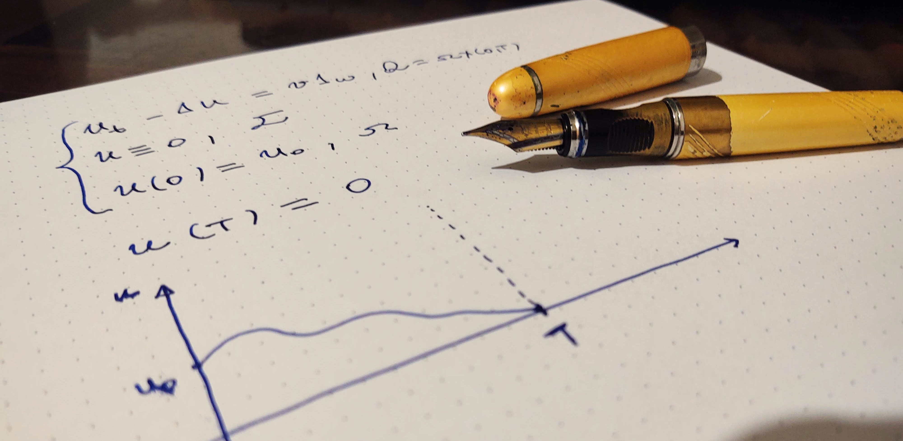

Research

Linhas de Pesquisa
Equações Diferenciais Parciais - EDP
Controlabilidade de Equações Diferenciais Parciais
Preprints
Araújo BSV, Demarque R, Viana L (2023) Boundary null controllability of degenerate wave equation as the limit of internal controllability. arXiv:2311.08084.
Araújo BSV, Demarque R, Faria J. C. O, Viana L (2024) Carleman estimates for parabolic equations with super strong degeneracy in a set of positive measure. arXiv:2404.12537.
Publications
Advising
Undergraduate Research Advisor (Iniciação Científica)
Jessica Maria Marconde do Valle. Temperaturas estacinárias em uma placa em movimento. 2013. Iniciação científica (Engenharia de Produção) – Universidade Federal Fluminense
Inst. financiadora: Fundação Carlos Chagas Filho de Amparo à Pesquisa do Estado do RJÁtila Roger Cavalcanti dos Santos. Aspectos Gerais da Integral de Lebesgue. 2013. Iniciação científica (Engenharia de Produção) – Universidade Federal Fluminense
Inst. financiadora: Fundação Carlos Chagas Filho de Amparo à Pesquisa do Estado do RJPaulo Sérgio Alves Carreira. Estudo da generalização do conceito de medida para subconjuntos abstratos da reta e do plano. 2014. Iniciação científica (Ciência da Computação) – Universidade Federal Fluminense
Inst. financiadora: Fundação Carlos Chagas Filho de Amparo à Pesquisa do Estado do RJsGustavo Jorge Martins de Aguiar. Análise de Fourier e Resolução de EDPs. 2017. Iniciação científica (Engenharia de Produção) – Universidade Federal Fluminense
Inst. financiadora: Fundação Carlos Chagas Filho de Amparo à Pesquisa do Estado do RJMilena Fernandes da Conceição. Estudos dos Espaços \(L^p\). 2018. Iniciação científica (Engenharia de Produção) – Universidade Federal Fluminense
Inst. financiadora: Fundação Carlos Chagas Filho de Amparo à Pesquisa do Estado do RJNatan da Costa Lucas. Estudo dos Espaços \(L^p\). 2018. Iniciação científica (Engenharia de Produção) – Universidade Federal Fluminense
Inst. financiadora: Fundação Carlos Chagas Filho de Amparo à Pesquisa do Estado do RJLeuber de Araújo Melo. Integração em Coordenadas Polares Multidimensional e Aplicações. 2020. Iniciação científica (Matemática) – Universidade Federal Fluminense
Inst. financiadora: Fundação Carlos Chagas Filho de Amparo à Pesquisa do Estado do RJJoão Victor Brum das Chagas. Análise Espectral de problemas de Sturm-Lioville singulares e aplicações na controlabilidade da equação da onde degenerada. 2024. Iniciação científica (Matemática) – Universidade Federal Fluminense
Inst. financiadora: Fundação Carlos Chagas Filho de Amparo à Pesquisa do Estado do RJCarlos Yure de Brito Souza Domingues. Aplicações das Séries de Fourier-Bessel na resolução de problemas de Sturm-Liouville singulares. 2025. Iniciação científica (Matemática) – Universidade Federal Fluminense
Inst. financiadora: PIBIC.
Other kind of Advising (Orientação de outra natureza)
Alline Pinto Ribeiro Lopes. Produção de vídeo aulas de matemática para o ensino superior. 2017. Orientação de outra natureza (Ciência da Computação) – Universidade Federal Fluminense
Inst. financiadora: Pró-Reitoria de Assuntos EstudantisIngrid Mesquita Magalhães. Produção de vídeo aulas de matemática para o ensino superior. 2017. Orientação de outra natureza (Engenharia de Produção) – Universidade Federal Fluminense
Inst. financiadora: Pró-Reitoria de Assuntos EstudantisGabriel Fortuna Serafim. Produção de vídeo aulas de matemática para o ensino superior. 2017. Orientação de outra natureza (Ciência da Computação) – Universidade Federal Fluminense
Inst. financiadora: Pró-Reitoria de Assuntos EstudantisMaria Williany Lopes Lira. Introdução a análise real. 2014. Orientação de outra natureza (Engenharia de Produção) – Universidade Federal Fluminense
Inst. financiadora: Pró-Reitoria de Assuntos Estudantis